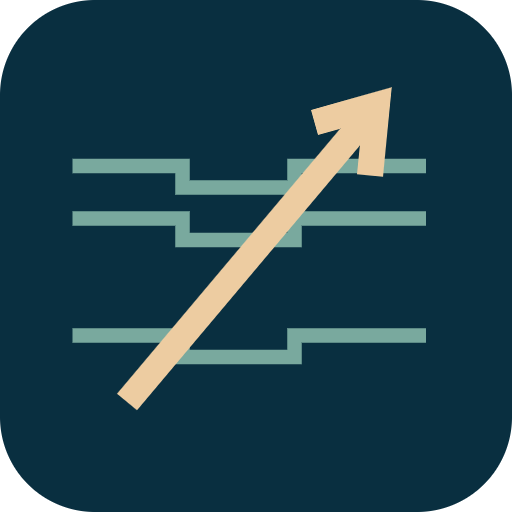

<- all projects

Saltline
PC
Volume
Live
One breath, one careful shot: supply an island night market and solve the lighthouse mystery.
A storm has cut a small fishing village off from its suppliers. As its newest freediver, learn the coves, take only what the market needs and find out who keeps lighting the old lighthouse. Aim, steady and release your spear, lead moving fish and wait for the line to come back. There are 30 market contracts across five coves in a pixel-art sea and 24 fictional fish, including protected species you must leave alone. Four buyers each pay best for different fish, and freshness drops the longer you stay down. Improve your breath, spearhead and line through a six-chapter story with three endings.